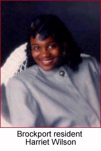
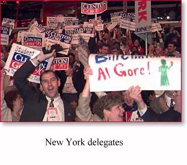

On the Horizon


As we head into the final days
of the campaign, we need your help
energizing your community to
GET OUT THE VOTE!Call the Clinton/Gore office number
below to volunteer.New York Highlights
Brockport resident Harriet Wilson
tells us why she supports the PresidentClinton-Gore '96 Headquarters
300 Park Avenue South
Twelth Floor
New York, NY 10010Phone: 212-253-9456
Fax: 212-253-9423
Political Director: Carol Gerstl
New York Democratic
Coordinated Campaign
300 Park Avenue South
Twelth Floor
New York, NY 10010Phone: 212-253-9696
Fax: 212-253-0927
The Coordinated Campaign is a distinct entity,
directed by the Democratic National Party and
the State Democratic Parties, and designed
Paid for by Clinton/Gore ’96 General Election Committee, Inc.